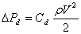

管道（和管道）中的流动理论已在《管道》第 35 章中得到完善和总结。 2005 ASHRAE 基础手册 [ASHRAE 2005] 并在 [Blevins 1984] 关于管道和管道流的章节中进行了更广泛的处理。请参阅 管道配件数据库 [ASHRAE 2002] 有关管道配件动态损耗的大量数据。分析基于伯努利方程及其假设。一段管道或管道的摩擦损失由下式给出
|
|
(47) |
哪里
f
= 摩擦系数，
L
= 管道长度，以及
D
= 水力直径。
由配件等引起的动态损耗由下式给出
|
 |
(48) |
哪里 Cd = 动态损耗系数。总压力损失由下式给出

|
(49) |
自从 F = rVA , 其中 A 是横截面（或流动）面积，

|
(50) |
CONTAM 使用非线性 Colebrook 方程计算摩擦系数 [ASHRAE 2001, p 2.9, eqn. 29b]：

|
(51) |
哪里
e
= 粗糙度尺寸，以及
Re = 雷诺数 =
rVD/m = FD/mA.
该非线性方程可以使用以下通过牛顿法从方程（51）导出的迭代表达式来容易地求解：

|
(52) |
哪里
g = f -1/2,
a = 1.14 - g ln(e
/D),
β = 9.3/(Re
·e/D
），以及
g = 2·
log(e) = 0.868589。
收敛解通过方程 (52) 的 2 或 3 次迭代获得，使用 g = a 作为起始值。如果值 g 已经保存了上次针对特定管道单元计算的结果，并且流量没有发生很大变化，只需要迭代一次方程（52）即可计算摩擦系数。
方程 (50) 的精确导数很难计算，因此 CONTAM 使用割线近似。导数遇到幂律方程的标准问题，即它们未定义为 DP 趋近于零。这在 CONTAM 中通过线性近似 (22) 求解，计算出的系数在用户指定的过渡雷诺数（默认 = 2000）下给出与方程 (50) 相同的流量。可以对层流房间中的流动进行更详细的描述，但这可能会超出 CONTAM 中描述问题其余部分的详细程度。
终端损耗计算
在 CONTAM 中，管道终端本质上是零长度管道，其特征是等效损耗系数，该系数是在模拟过程中根据终端的属性确定的， Ct and Cb ，以及时间表或控制信号（S ) 作用于终端。
Ce = Ct + Cb + (1-S)/S
哪里
Ct = 终端损耗系数
Cb = 终端平衡系数
Sc = 作用于终端的时间表或控制信号
S = 最大值(1x10 -6, Sc1)
Sc1 = 分钟(1, Sc)
使用这种技术，输入信号 Sc 0.0 将产生非常高的损耗系数，1.0 将简单地提供由以下组合确定的损耗 Ct and Cb, Sc 1x10 之间 -6 和 1 将用于增加 ( Ct + Cb ）根据上面的等式，并且 Sc 小于 0.0 将等于 1.0，即损失不能降低到 ( Ct + Cb ）。价值 Ce 然后将用作上述管道流动方程中的动态损失系数。